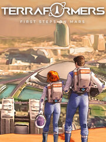

Terraformers: First steps on Mars
Terraformers: First steps on Mars
Detalles
|  | |
| Tiempo de juego | No Jugado |
| Última actividad | 24/10/2021 21:33:11 |
| Añadido | 19/03/2022 9:30:11 |
| Modificado | Nunca |
| Estado de finalización | Not Played |
| Librería | Steam |
| Fuente | Steam |
| Plataforma | PC (Windows) |
| Fecha de lanzamiento | 23/10/2021 |
| Puntuación de la Comunidad | 84 |
| Puntuación de la Crítica | |
| Puntuación de usuario | |
| Género | Free to Play Simulation Strategy |
| Desarrollador | Asteroid Lab |
| Editor | Goblinz Publishing IndieArk |
| Característica | Achievements Cloud Saves Single Player |
| Enlaces | Punto de encuentro Discusiones Guías Noticias Página de la tienda PCGamingWiki Logros |
| Tag | |
Descripción
Wishlist the full game!
https://store.steampowered.com/app/1244800/Terraformers/
Recommended for you
https://store.steampowered.com/app/1639080/Sandwalkers
https://store.steampowered.com/app/1561040/Diluvian_Winds/
https://store.steampowered.com/app/1348690/Oaken/
About the Game
 Terraformers: First Steps on Mars is a free standalone version of Terraformers.
Terraformers: First Steps on Mars is a free standalone version of Terraformers. Lead the first human settlement on Mars! Earth is sending its first expedition to assess the viability of human settlement on Mars, with the long term objective of terraforming the planet and spreading life across its surface. You will have to explore the planet, exploit local resources and develop your colonies into large cities. But make sure to provide a decent living standard for your people to retain their support! Are you ready to lead mankind's first steps on Mars?
Support us with the Supporter Pack and get exclusive discount at launch!
https://store.steampowered.com/app/1795320/Terraformers_Supporter_Pack/Choose your leaders

Explore the planet

Develop the first outposts